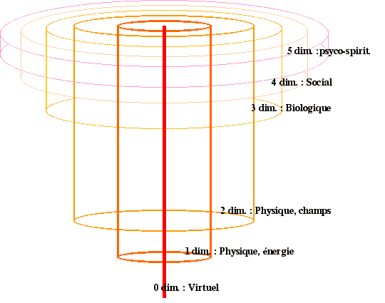
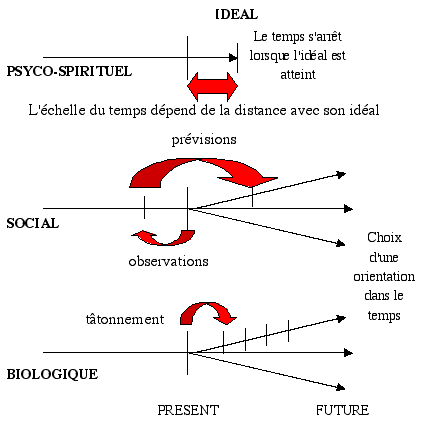

Niveaux d'analyse
Le monde dans lequel nous évoluons possède plusieurs dimensions. Notre sens commun nous en révèle au moins quatre; trois dimensions de l'espace et une dimension temporelle. Les théories cosmologiques formulent des hypothèses pour plusieurs autres dimensions cachées au sens commun. Nous ne retiendrons cependant qu'une cinquième dimensions, celle des échelles, récemment développées par L. Nottale. Cette cinquième dimensions n'est pas cachée mais elle détermine un niveau d'expérience humaine qui reste souvent du domaines de l'inconscient. La psychologie et la spiritualité cherchent, chacune à leur manière, à rendre conscient des phénomènes qui défient la logique du sens commun.
L'observation de la nature, du plus petit au plus grand, du plus vieux au plus récent, et du plus simple au plus complexe, nous suggère que la complexité observée est le produit d'une dynamique évolutive. Ainsi, chaque niveau de complexité s'est construit dans une dynamique autonome en se nourrissant des niveaux inférieurs qu'elle essaie de contrôler au profit de son propre développement. Aux trois types de dimensions observées, l'espace, le temps et l'échelle, on peut associer deux dynamiques, la dynamique entropique et la dynamique complexe. La dynamique entropique est associée aux dimensions spatiales. Elle se nourrit de la tendance naturelle des systèmes à évoluer vers des états homogènes de l'espace, donc à minimiser les contraintes spatiales. La dynamique complexe est associée à la dimension temporelle. Elle est produite par la tendance naturelle des systèmes à évoluer vers des états homogènes du temps, c'est-à-dire à éviter le changement et ainsi à minimiser les contraintes temporelles.
Les différents niveaux qui compose le monde et qui dépendent des dimensions de l'espace, sont empilés les une sur les autres de sorte que chaque niveau dépend des niveaux qui lui sont inférieurs. Paradoxalement, les niveaux supérieurs ont la capacité de modifier les niveaux inférieurs, de sorte que le niveau social peut partiellement contrôlé le niveau biologique et les niveaux physiques (dynamique systémique complexe externe caractérisée par une spirale centripète positive).

cet empilement de niveau nous permet d'analyser indépendamment l'impact de chaque niveau sur le développement biologiques, social et psycho-spirituel de la société humaine. On distingue, dans ce que l'on étudie sous le terme de physique, le niveau virtuel (0D), le niveau d'où émerge l'énergie (1D) et celui qui produit les champs (2D) et qui donne ainsi à l'espace (environnement) des propriétés hétérogènes. Le niveau biologique (3D) détermine la dynamique de la vie, le niveau social (4D) celui des groupes d'individus, et enfin le niveau psycho-spirituel (5D) qui détermine le sens (échelle des dimensions) des événements.
Chacun de ces niveaux correspond à des domaines spécifiques de la connaissance (classification complexe). Les niveaux physiques, bien qu'ils soient les plus fondamentaux et qu'ils ne possèdent que localement des dynamiques interne de développement autonomes (systèmes complexes caractérisé par une spirale centrifuge positive), déterminent des variables dans les niveaux supérieurs. Ainsi, l'énergie, bien qu'elle soit décrite dans un espace à une dimension, s'exprime dans les autres dimensions qui caractérise les systèmes biologiques, sociaux ou psyco-spirituels. Les champs déterminent aussi bien les conditions physiques de la couche d'ozone que les polarité politiques ou les dualités dans les systèmes de croyances.
Au commencement était le néant, un monde virtuel peuplé de particules sans existence matériels ni temporelles. Les particules virtuelles, telles qu'elles sont imaginées dans plusieurs théories des particules élémentaires, n'ont aucune existences définies dans un monde aux dimensions spatiales ni temporelles. Elles existent en tant que potentiel de la même manière qu'une idée ou un ensemble d'assertions logiques sont virtuelles, bien qu'inscrite sur un support matériel ou énoncé par la parole.
C'est du néant, c'est-à-dire d'un monde virtuel de dimension zéro (0D) qu'émerge l'énergie. Il n'est actuellement pas possible de vérifier si une dynamique systémique du mode virtuel est à l'origine de l'émergence de l'énergie. Par dynamique systémiques, nous entendons la dynamique de reproduction, de différenciation, de hiérarchisation et de liaison qui conduit à l'autonomie et à l'émergence de propriétés nouvelles. La structure du monde virtuel et son organisation spécifique peut être à l'origine de l'émergence massive d'énergie puis de sa dégradation violente, tel que le décrit les modèles du big bang. La caractéristique émergente de l'énergie permet de penser qu'elle n'a pas eu besoin d'être créé, mais qu'elle est apparu de la même manière que la vie ou les sociétés. L'énergie est l'émergence de dimension une (1D). Elle est définie dans une (1) dimension, car elle correspond à la distance qui sépare deux particules virtuelle associées et ainsi liées. C'est de ce monde virtuel d'énergie zéro qu'émerge le monde spatial. L'émergence n'as pas de contrepartie dans un autres monde ou dans une autre dimensions, comme c'est le cas pour la dynamique de l'énergie dans les dimensions supérieurs (conservation de l'énergie). L'énergie, dans sa forme la plus simple est une corde en accord avec les plus récentes théories des particules élémentaires à la recherche de la grande unification. Bien que définie dans une seule dimension, l'énergie s'exprime dans toutes les dimensions. énergie potentielle, énergie cinétique, énergie chimique, énergie de fusion, énergie nucléaire, énergie thermique, etc., sont autant d'expression de la notion simple de distances entre éléments produisant ayant un caractère énergétique. Elle sont des formes dérivées, transformées de l'énergie originelle.
L'émergence systémique du premier niveau est l'énergie. La mesure des différentes formes d'énergie peut relativement aisément être ramené à une seule unité. Elle est mesurée par des grandeurs tels quels que les calories ou des Joules. Pour décrire l'ensemble des formes d'énergie, il faut utiliser une variable d'espace (2D), une de fonction (3D) une de temps (4D) et une de sens (5D). L'espace intervient par exemple dans les énergies à caractère potentiel, le temps dans les énergies à caractère cinétique et la fonction pour définir qualitativement le caractère dégradé de l'énergie. Nous voyons que bien que l'énergie soit le premier niveau systémique, le fait qu'il s'exprime dans les autres niveaux nous oblige à utiliser pour la description les unités des autres niveaux systémiques.
La différenciation de l'énergie, dans les premiers instants de l'univers, s'est construite par une asymétrie de la liaison qui fige les particules virtuelles. Cette asymétrie, qui permet de différencier les extrémités de la corde, donne à l'espace des caractéristiques hétérogènes dans une deuxième dimension. Les plans qui contiennent la corde dans sa longueur, sont tous identiques (homogénéité dans la troisième dimension), de sorte que l'hétérogénéité qui apparaît suite à la rupture de symétrie de la corde construit une deuxième dimension de l'espace. Bien que le champ qui résulte de l'effet de la corde sur son environnement, ne fasse émerger des hétérogénéité que dans une deuxième dimension, il s'exprime dans l'ensemble des autres dimensions de l'espace et du temps. Ainsi, les champs électriques, les champs magnétique résultant du mouvement des particules, mais aussi le climat, la répartition des températures et de la lumière, les propriétés des biotopes, des ensembles d'organismes vivants, et enfin les champs de connaissance, les espaces identitaires et de croyances, les multiples organisations sociales associées à leurs lois et leurs coutumes, sont autant d'expression de la notion de champs c'est-à-dire la somme des effets de la polarité de chaque éléments d'un système sur leur environnement.
L'émergence du second niveau est le champ. Le champ, dans sa formulation la plus simple, caractérise une dimension par rapport une autre. Elle peut caractériser l'énergie dans l'espace, mais aussi de nombreuses autres variables issues de la complexification du niveau inférieur ou des niveaux supérieurs. L'unité fondamentale de champ à laquelle la grande diversité des champs sera ramenée, est l'énergie (1D), la fonction (3D), le temps (4D) ou le sens (5D) en relation avec l'espace (2ème dimension). En combinant ces variables, on peut décrire l'ensemble des champs.
Nous trouvons ici l'origine d'une vision bipolaire de la nature. Cette vision bipolaire est peut être ancrée solidement dans les fondements de notre univers. Cette intuition qui nous conduit à comprendre le monde en terme de bipolarité est peut être dictée par un principe très général qui nous conduit à formuler et à échafauder des théories sur une telle vision du monde.
La nature biologique des être vivants peut être précisément définie à travers le concept de système, en tant qu'unité autonome dans un espace à trois dimensions. Cette affirmation a pour origine l'observation de la nature biologique du monde. En effet, les être vivants sont tous caractérisés par un certain nombre de fonctions morphologiques. Ces fonctions biologiques sont liées aux formes des structures biologiques. La formes des structures biologiques permet la réalisation de certaines fonctions, aussi bien de manière macroscopique (formes des membres et des structures biologiques...) que de manière microscopique. La fonction des protéines, des enzymes, le stockage de l'information dans l'ADN, sont autant de fonctions interne aux systèmes biologiques qui utilisent les trois dimensions spatiales (3D). Ainsi, les systèmes biologiques permettent de maintenir et même de complexifier les éléments physiques dans les trois dimensions trois dimensions de l'espace, ce que n'est pas capable de réaliser les systèmes physiques. Tout au plus, les systèmes physiques produisent des structures en 3 dimensions (de l'énergie ou des champs) mais ils ne sont pas capable de les reproduire ni de les complexifier.
La spécificité des systèmes biologiques est la dynamique systémique qu'ils produisent dans l'espace 3D. Cette dynamique permet la permanence de l'espace 3D, dans le sens ou la structure biologique est capable de maintenir dans le temps des structures spatiales quand bien même l'entropie les dégrade. Maintenir des structures 3D signifie les reconstruire en permanence puisque le temps les érode. Il n'y a qu'une dynamique systémique biologique ou de niveau supérieur qui est capable de produire de la constance et de la permanence dans l'espace. Nous avons vu que le premier niveau physique maintient des hétérogénéité dans un espace à une dimension et que ces hétérogénéité constituent l'énergie primaire. Le second niveau physique maintient des hétérogénéité dans un espace à deux dimensions à travers les champs. Le niveau biologique construit et maintient des hétérogénéité dans un espace à trois dimensions. Il rend les formes permanentes dans l'espace et, à travers la complémentarité (non-complémentarité), permet l'émergence de la fonction spatiale.
Comme pour les niveaux précédents, les structures biologiques sont construites sur plusieurs étages imbriqués les uns dans les autres. Les organites cellulaires, tels le noyaux, les plastes, les mitochondries, ainsi que les virus et autres micro-organismes, semble être les plus petites unités biologiques. Ils forment les organes intracellulaires. Les étages supérieurs sont constitués par les cellules, les organes et les organismes multicellulaires avec toute leur diversité. Les biotopes, des plus petits aux plus grands, à l'échelle de la planète ou d'une région restreinte, constituent des systèmes physique de type champs. Ils n'ont pas de dynamique évolutive autonome dans le niveau biologique. En revanche, les systèmes biologiques (végétal, animal) produisent un environnement de type champ, qui permet leur propre développement. La concentration en oxygène et en gaz carbonique, la température, l'humidité, le rayonnement, les vents, les cycles des éléments minéraux et de l'eau, sont, dans une certaine mesure, autorégulé par et avec les systèmes biologiques. Les systèmes biologiques produisent des contraintes sur les systèmes physiques qui se modifient. Ils organisent dans l'espace 3D aussi bien l'énergie que les champs. En même temps, ils s'adaptent aux contraintes que les systèmes physiques imposent.
Il n'existe aucune mesure directe de la fonction spatiale ni de l'utilité des formes. Les mesures que l'on peut réaliser sont la projection de cette utilité sur l'acquisition de l'énergie(1D) par exemple, sur la viabilité d'un environnement (2D), sur l'économie du temps (4D) ou sur le plaisir émotionnel (5D) qu'elle produit. Toutes les mesures peuvent, en réalité, se décliner en terme d'énergie puisque c'est le premier niveau. L'énergie est elle-même définie en terme d'utilité sociale, mais elle correspond à une mesure fondamentale, delaquelle dépend toutes les autres. La dynamique biologique, en produisant des formes utiles, permet de minimiser les contraintes temporelles des champs (confection d'habitats pour se protéger des conditions climatiques défavorables, déplacement pour trouver des espaces plus favorables, production de l'alimentation, etc.) qui à leur tours permettent de minimiser les contraintes temporelles de l'énergie. De la même manière que la mesure des champs peut se réduire à la variation de l'énergie dans l'espace, la mesure de la fonction peut se réduire à la variation des champs dans l'espace. L'énergie est une dérivée spatiale de premier degré, les champs sont des dérivées spatiales secondes, et la vie, assurant des fonctions dans les trois dimensions de l'espace, est une dérives spatiale de troisième degré. Pratiquement, cela signifie que la mesure des fonctions biologiques peut s'effectuer par l'impact sur l'environnement (champs) et sur l'énergie.
Pour les êtres vivants à prédominance sociale, c'est-à-dire les êtres vivants qui sont plus conditionnés par les contraintes sociales que par les contraintes biologiques, on est obligé de réaliser l'analyse biologique à travers l'analyse sociale. Il en est de même pour l'analyse physique, c'est-à-dire l'impact sur l'environnement et sur l'énergie. On choisit donc les unités de mesure en fonction des systèmes étudiés et du type d'impact analysé. Le principe de l'intégration en cascade, décrit dans la suite de ce document, est appliqués entre les niveaux systémique. Les niveaux qui imposent le plus de contraintes aux systèmes étudiés sont ceux que l'on prend en compte en premier. Moins les niveaux imposent de contraintes, moins on en tiens compte dans l'intégration.
Si l'on étudie l'impact d'espèce à prédominance biologique, les forêts du Jura ou les fourmis par exemple, sur l'environnement et sur l'énergie, on analysera les modifications de l'environnement (champs), c'est-à-dire de la modification de la répartition de l'énergie en quantité, (modification de l'écoulement de l'énergie) et en qualité (CO2, O2, cycle de l'eau ou champs hydriques, champs thermiques, champ des espèces vivantes, champ des valeurs sociales, champ des valeurs éthiques et spirituelles,...). Bien que l'on puisse utiliser une unité de mesure unique, la capacité du système étudié à se développer, une multitude de champs sont concernés par le développement des espèces vivantes, de sorte que l'impact doit être décliné en fonction de l'ensemble des champs concernés par l'espèce étudiée. L'unité de mesure, c'est-à-dire la constance dans l'espace du système biologique analysé, est centrée sur l'objet de l'analyse. Ainsi si l'on analyse les forets du Jura ou les fourmis par exemple, les champs optimums de développement pour ces espèces seront le critère de référence pour l'analyse de l'évolution des champs et de l'éloignement des conditions optimums. Les sources d'énergie primaire pour ces espèces seront le critère de référence pour l'analyse énergétique.
La description du phénomène social nous montre qu'il est composée par un certain nombre de rites et d'actes qui n'ont pas de signification directe en relation avec la production des formes utiles caractéristiques des systèmes biologiques. La finalité de ces actes conduit non plus à produire, à diversifier, à organiser ou à fusionner des formes utiles, mais à le faire pour des processus qui se déroulent dans le temps. L'information n'est plus figée, comme pour les êtres biologiques, sur des supports en trois dimensions, mais à travers des rites, des actes et des dynamiques. La connaissance sociale permet de reproduire des dynamiques, l'éducation par exemple, mais aussi le savoir faire de l'artisan ou les dynamiques de production industrielles. Si le support de la dynamique sociale est bien l'organisme biologiques (homme ou animaux), la dynamique sociale qui l'anime se déroule dans un espace à 4 dimensions, trois dimensions spatiales et une dimension temporelle. Le phénomène social qui organise les hommes ou les animaux, qui les différencie, qui reproduit leurs habitudes et leurs savoir faire, qui les unit et les désunit, à pour base le rite et les actes sociaux. C'est le caractère émergeant du niveau social. Savoir être pour être bien considéré, savoir faire pour exercer un bon métier, savoir s'exprimer et bien parler pour être un bon politicien, savoir plaire, savoir aimer, savoir partager et se faire des amis, sont autant d'attitude dynamiques qui portent la dynamique sociale.
Cette dynamique du mouvement des formes, utilise et produit à la fois les niveaux inférieurs. Elle les utilise en donnant des critères de valeurs aux éléments biologiques ( les plus beaux, les plus rapides, les plus forts, les plus rusés,...) et aux éléments physiques ( la qualité de l'environnement pour les critères de champs, l'argent, les ressources,...pour les critères d'énergie). Ces critères sont centrés sur la capacité à produire le développement du système social considéré en lui permettant de maîtriser la quatrième dimension, le temps. Maîtriser le temps c'est en disposer en abondance (disposer du temps des autres, donner plus de valeur à son temps,...) afin de servir les objectifs du système. Les systèmes sociaux produisent les niveaux inférieurs. Ils cherchent à les maîtriser pour ne plus en être dépendant. Ils cherchent à produire l'environnement biologique et physique favorable à son développement.
La finalité de la dynamique biologique est la production d'objets, de formes utiles pour garantir la constance dans l'espace et ne pas être soumis à la dégradation irrémédiable de l'énergie et des champs, ni des structures spatiales. Dans le même sens, la finalité de la dynamique sociale est la production du temps, le contrôle du temps. Elle lutte contre la dégradation du temps qui empêche que les processus ne se reproduisent et ne se complexifie et qui oblige ainsi le temps à se dérouler en sens unique. En utilisant le temps comme support au stockage de l'information, elle permet par réversibilité d'utiliser cette information pour produire du temps. La connaissance est typiquement un phénomène social car elle fait appel à l'expérience (expérience pratique quotidienne, relationnelle, scientifique, émotionnelle,...) qui se déroule dans le temps. La connaissance est la compréhension des processus, la recherche de la logique évolutive. Le déroulement d'une dynamique au cours d'une expérience est formalisé, concentré, symbolisé, mémorisé, figé par la connaissance. En sens inverse, cette connaissance qui s'utilise, se décondense, s'adapte à des situations semblables, permet de prévoir, de planifier, d'anticiper et ainsi d'orienter les événements dans le temps, afin que le temps soit favorable au développement de son système. Tout connaissance, même la plus abstraite (expérience purement intellectuelle), fait appel à la symbolisation d'expériences pratiques. C'est un mécanisme d'acquisition, d'abstraction, d'interprétation et d'action qui est à la bas de ce pont jeté entre le passé et l'avenir. Alors que les systèmes biologiques avance dans le temps à tâtons (diversité aléatoire et sélection sur la base du résultat actualisé), puisqu'il n'ont pas de dynamique temporelle, les systèmes sociaux avancent par observation, essai, recherche, action et évaluation. .
Nous avons parlé, pour l'émergence du niveau biologique, de la valeurs utilitaire et de la fonction des formes concrétisé à travers les objets, les organes, les molécules biologiques. Tout les niveaux ont leurs fonctions associées à la dimension sur laquelle ils évoluent de manière systémique. La fonction est, comme nous l'avons déjà développé auparavant, la minimisation des contraintes temporelles. Pour les systèmes sociaux, la fonction, la valeur utilitaire est la production, la reproduction, l'économie, la gestion du temps. Pour les systèmes biologiques, c'est la complémentarité spatiales des structures (ou la non complémentarité) qui est le critère fonctionnel. Pour les systèmes sociaux, le critère fonctionnel est la rationalité, la logique, la raison. Elle correspond à notre intellect, notre intelligence, nos capacités intellectuelles, par oppositions à nos capacités émotionnelles qui interviennent dans le niveau psycho-spirituel.
L'émergence systémique du social est le symbole. Comme nous venons de le dire, il permet de comprimer le temps. Il fait le pont entre la dynamique qu'il décrit et la description qui la fige. Les symboles peuvent être soit dynamiques (les actes, les rites) soit statiques (écriture). Il font alors appel à des expériences pratiques qui constituent une identité commune à tout les individus qui partagent la même compréhension du symbole.
Pour les systèmes à dominance sociales (les états, les entreprises, les clubs et associations,...), nous pouvons utiliser comme unité de mesure, la valeur d'échange, c'est-à-dire la valeur symbolique exprimée en unité monétaire. Bien qu'elle semble parfois très aléatoire, la valeur monétaire qui exprime une valeur symbolique, est une valeur rationnelle qui se définit par rapport à la capacité de développement du système considéré. Le système boursier en est un exemple très explicite, mais aussi la valeur de la monnaie d'un pays, la capacité de mobiliser des ressources financière pour une association, la capacité commerciale d'une entreprise sont des indications de réussite sociale. L'analyse n'est pas centrés sur la valeur monétaire, mais sur les symboles sociaux qui gèrent les relations humaines au sein d'un groupe social. Il est bien évident que les relations humaines ne sont pas toujours directement liées à une valeur monétaire. La plus part de symboles ne peuvent pas être quantifiés financièrement. Cependant, la finalité de cette dynamique symbolique est le contrôle du niveau social, biologique et physique. Les symboles sont ancrés dans le niveau social, biologique et physiques. Sur le niveau social, il sont exprimés en valeur monétaire, car le temps que le social permet de gérer à une équivalence symbolique financière (le temps des hommes, des machines, des infrastructures... c'est de l'argent). Plus précisément, la partie social d'un symbole est exprimée en valeur monétaire. La composante biologique d'un symbole (valeur de la vie non marchandable,...) peut être mesurée à travers le niveau biologique, c'est-à-dire par la fonction spatiale que l'organisme vivant possède. Il en est de même pour la part physique des symboles. (Ressources non marchandables tel que l'air ou l'eau (1D), qualité des environnementales par rapport à la pollution, à la chaleur (2D),...) que l'on peut analyser en terme d'énergie (1D) ou de champ centré sur les exigences du système analysé. Cette procédure d'analyse permet de s'adapter aux types de symboles des systèmes sociaux. Ils peuvent être plus ou moins centrés sur les différents niveaux. L'analyse en tiendra compte. De cette manière on évite le piège de l'analyse financière globale qui implicitement postule que tout peut être exprimé en valeur monétaire. L'analyse complexe des systèmes sociaux, bien qu'elle soit centrés sur le développement des systèmes sociaux, prend en compte l'ensemble des niveaux desquels dépend le social. Qualitativement, selon l'étique c'est-à-dire l'échelle de valeurs des systèmes, les symboles s'orientent sur les niveaux qui produisent le plus de contraintes.
La science définit le niveau psycho-spirituel à travers la psychologie alors que les religions le définit à travers la spiritualité. bien qu'ils ne puissent le supperposer parfaitement, ils traitent chacun à leur manière du niveau psycho-spirituel. La rationalité, socle de la démarche scientifique qui caractérise l'approche psychologique, a certainement ces limites pour expliciter les phénomène de la spiritualité puisqu'ils semblent être de nature plus émotionnelle que rationnelle. En fait, la rationalité s'est ancrée dans la description des quatre niveaux que nous venons de décrire, puisqu'elle en a trouvé des explication facilement accessibles à nos sens et à notre intelligence. Nous étendons partiellement cette rationalité à travers la science de la psychologie, mais il reste des mystères que seul une approche émotionnelle semble en mesure de révéler. Est-ce une limite à la rationalité elle même, ou un manque de concepts permettant une expication rationnelle du niveau psycho-spirituel? Le passage de l'irrationalité à la rationalité est semblable au passage de l'inconscience à la conscience. Pour un croyant, la croyance est rationnelle car elle se rattache à des expériences personnelles que seul l'individu est en mesure d'interpréter. L'analyse du sens des événements possède toujours une composante de croyance. Le fait de projeter des événements dans l'avenir implique, soit que nous croyons dans des lois immuables qui ont émerger lors de l'évolution, soit que nous croyons en une finalité dictée par un niveau supérieur.
La description que nous avons fait de la nature systémique du monde, nous permet de postuler en toute logique, l'existence d'une sixième dimension. Des expériences aussi bien physique (par exemple l'inséparabilité du spin de deux élections s'éloignant mutuellement à une vitesse proche de celle de la lumière) que directement psychologiques ou spirituelles (télépathie, lévitation, ...) confirment l'existence d'un sixième niveau de cohérence systémique (La bible décrit très clairement une dynmique systémique des esprits; appartenance identitaire, différenciation, hiérarchie et lien). Nous avançons ici l'hypothèse que la nature de cette sixième dimension est l'échelle fractale des autres dimensions. Cela permet de donner un contenu logique à des expériences dans lesquels le temps et les distances sembles contractées et ainsi échapper à notre regard logique dans la dimension dans laquelle nous vivons. Un changement d'échelle fractal permet, tout en conservant les logiques de la physique classique et de la physique relativiste, de comprendre que le temps et l'espace ne sont pas des dimensions figées et possèdent des caractéristiques fractales.
L'émergence des sciences sociale à réduit la dimension spirituelle à l'impact de la croyance sur le niveau social. Evidement, cet impact est très fort, puisque, comme nous l'avons vu pour les autres niveaux, le niveau psyco-spirituel cherche à contrôler le niveau social, qui cherche lui même à dominer le niveau biologique puis le niveau physique. La science à ramené pendant longtemps la réalité psycho-spirituelle, à son seul impact sur les systèmes sociaux, puisque l'on observait plus facilement le résultat que la cause. La psychologie à fait avancer fortement la compréhension de la nature spirituelle des hommes. étant une approche rationnelle, elle s'est souvent mise en opposition avec l'approche émotionnelle de la spiritualité, décrite notamment dans la bible et dans d'autres livres dit "inspirés" (d'autre religions également).
L'émergence du niveau psyco-spirituel est la croyance. Ne comprenez pas la croyance que dans son aspect religieux. En réalité la religion est l'ancrage social d'une croyance bien spécifique qui est celle en un Dieu. Il faut clairement séparer la nature spirituelle de la croyance et son impact sur son environnement. Une croyance absolue dans la rationalité produit des sociétés utilitaristes et capitalistes qui cherchent à nier l'existence d'autre formes de connaissance (connaissance émotionnelle). Les croyances sont très diversifiées et chaque individu, de la même manière qu'il est biologiquement et socialement unique est spirituellement spécifique. La croyance donne un sens aux choses, aux processus et aux dynamiques de la nature. Chaque individus donnera un sens spécifiques aux événements qu'il vit. Bien que des catégories générales existent et que les individus se raccrochent à des identités spécifiques, il est un élément différencié dans l'ensemble des éléments de nature psyco-spirituel. La nature systémique, telle que nous l'avons définie, caractérise les croyances. Elles ont des identités spécifiques définit par un ensemble de caractère. Elle reproduit ce caractère identitaire. Les croyances se différencient, elles divergent (sectes,...). Certaines croyances sont dominantes. Elles possèdent ainsi un caractère hiérarchique avec des capacités d'organisation. Les croyances produisent du lien psyco-spirituel, dans l'espace et dans le temps, ainsi que des ruptures.
Le sens que les individus donne aux événements permet de produire un invariant dans le temps, une référence absolue qui se place en dehors de la marche du temps. On rejoint ici la notion d'échelle qui permet de contracter le temps et de s'en affranchir. Alors que sur le niveau social le temps s'écoule (on l'utilise à nos fin), sur le niveau psyco-spirituel le temps ne s'écoule plus, il est figé ou s'écoule différemment (un jours est comme mille ans et mille ans comme uns jours aux yeux de Dieu...). La nature fractale du temps apparaît clairement à travers la croyance. Les dimensions de l'espace trouvent leurs limites dans les niveaux inférieurs (social, biologique, physique) puisque les structures spatiales peuvent être reproduites et complexifiées, luttant ainsi contre la dégradation entropique qui étend les dimensions de l'univers. L'entropie est à l'espace ce que la marche unidirectionnelle du temps est au temps. La minimisation des contraintes spatiale utilise le temps pour disperser et destructurer la nature alors que la minimisation des contraintes temporelles utilise le temps pour complexifier. L'idéal est le stade abouti ou le temps s'arrête et donc la dégradation entropique n'a plus cours. Le chaos est le stade abouti ou le temps s'est écoulé de manière infinie et a permis une complète dégradation de l'énergie et des niveaux supérieurs. La réalité que nous vivons se trouve entre ces deux extrèmes.
La psychologie des individus et des groupes permet d'expliquer en partie les dynamiques sociales. Comme nous l'avons souvent mentionné, les niveaux supérieurs cherche à contrôler les niveaux inférieurs. Le sens ou le non sens que les individus donnent à leurs actions permet de comprendre les dynamiques sociales (changement sociaux, guerre, dynamiques identitaires,...). cela semble même si important que des individus, richement pourvus en valeurs sociales, mais dépourvus de valeurs psycho-spirituels, c'est-à-dire de sens à leurs actes, sont portés à de profonds désespoirs conduisant jusqu'au suicide. Ce déséquilibre est une adéquation entre le sens des actions et les actions elles-mêmes. L'homme est plus qu'un être social puisque la reconnaissance sociale, à travers la possession des ressources sociales n'est pas suffisant à lui assurer son équilibre. Il doit trouver un sens à sa vie à travers ses actions. Le sens de ses actions dépend de son environnement social, biologique et physique, qui à la fois produit cet environnement. La croyance peut se centrer sur les différents niveaux de la nature selon l'intégration et les contraintes que ces niveaux produisent sur les individus.

Le temps n'est pas une composante constitutive du niveau biologique. Il le subit et son évolution s'opère par tâtonnement (variations aléatoire et sélection). Dans le niveau social le temps est une composant constitutive du niveau. Il a une dimension infinie, comme les autres dimensions de l'espace (infini signifie dans les limites de notre accès). Le social permet d'orienter l'évolution par un mécanisme d'observation, symbolisation et prévision. Il permet de reproduire le temps. de le dupliquer, de l'uitliser, de le contrôler, ce que ne peut faire le niveau biologique. Le niveau psyco-spirituel, pour le quel la croyance est un absolu intemporel, possède une dimension du temps finie. Le temps s'arrête là où l'idéal est atteint car le temps supplémentaire n'a plus de valeur pour conduire vers un objectif dans la mesure où il est atteint. La croyance n'a d'ailleurs plus de sens lorsque l'idéal est atteint. Elle n'est plus croyance mais réalité. D'autres croyances peuvent alors émerger. L'idéal, la croyance des individu dans une finalité (ou une absence de finalité) est plus ou moins défini. Elle l'est soit de manière explicite, soit de manière implicite. L'idéal, ce que l'on croit, c'est ce qui est bon et juste pour les individus correspond à l'ensemble des options que l'on choisit à priori et qui constituent l'étique. Une étique floue ne permettra pas de définir un idéal précis. La distance qui correspond à la mesure psycho-spirituelle sera longue car la fixation du temps ne pourra pas être arrêtée de manière précise. L'individu n'as pas d'objectif précis donc de sens précis dans sa démarche et dans l'ensembles des actes sociaux, biologiques et physique. L'échelle du temps sera très distendue. En revanche, un individu ayant une espérance bien définie pourra y coordonner l'ensemble de ses actes. Le temps est ainsi contracté.
Sur le niveau physique on mesure la valeur de l'énergie, sur le niveau biologique, on mesure la valeur des structures, sur le niveau social on mesure la valeur des actes et sur le niveau psyco-spirituel on mesure la valeur du temps. Un idéal très proche correspond à un temps fortement contracté et à une réalité intangible, une réalité qui n'est plus dégradée par l'entropie et qui ne peut plus être complexifiée.
L'analyse des hommes doit ainsi partir du niveau psyco-spirituel et évoluer vers les autres niveaux par une intégration en cascade. La croyance peut être centrés sur le physique, le biologique, le social ou le psyco-spirituel. Elle posera ainsi ses bases sur la stabilité physique, biologique, sociale ou psycho-spirituelle L'homme recherche désespérément la stabilité à travers la croyance. Cette croyance orientera ses actes par rapport aux différents niveaux de la nature, qui a son tour influence ses croyances. Le niveau social, le type de travail, l'environnement physiques, les ressources disponibles,... orientent les croyances qui sont un moyen de produire les invariants temporels que l'homme recherche pour dominer son environnement.
On conçoit aisément que la réalité sociale puisse se trouver modifier par la croyance. La capacité de persuasion peut être proportionnelle à la ferveur de la croyance (domaine scientifique, politique ou religieux par exemple). On a plus de peine à croire que des systèmes biologiques ou physiques puissent être modifiés (miracle) à l'encontre de notre sens commun de la perception de la nature. La modification des échelles de temps et d'espace, puisqu'elles sont liées, par la relativité d'échelle permet d'entrevoir un mécanisme logique de la dynamique psycho-spirituelle qui rétroagit sur l'ensemble des niveaux.